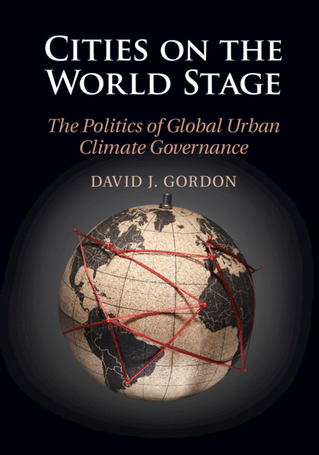

Publications & writing.
Books, journal articles, chapters, working papers, and research in progress. This bibliography is based on my November 2026 academic CV; links are included where confirmed. In-progress manuscripts are clearly separated from published work.
Book

Gordon, David J. (2020). Cities on the World Stage: The Politics of Global Urban Climate Governance. Cambridge University Press.
Explores how cities acquire authority and enact collective agency through transnational climate governance networks.
View the book at Cambridge University Press ↗Journal articles & scholarly commentary
- 2025Leffel, B., D. Gordon, and T. Lee. “Explaining policy teaching versus learning in environmental transnational municipal networks: The case of the Kitakyushu Initiative.” Journal of Urban Affairs. 1–20 Read ↗
- 2024Acuto, M., D. Pejic, S. Mokhles, B. Leffel, D. Gordon, R. Martinez, S. Cortes, and C. Oke. “What three decades of city-networks tell us about city diplomacy’s potential for climate action.” Nature Cities. 1: 451–456 Read ↗
- 2024
- 2024Gordon, D.. “Global Politics Through the Looking Glass: The Lasting Influence of ‘Cities and Climate Change’.” Environment and Planning C: Politics and Space. Short symposium contribution; publication details in CV incomplete
- 2022Gordon, D., and K. Ljungkvist. “Theorizing the Globally Engaged City in World Politics.” European Journal of International Relations. 28(1): 58–82 Read ↗
- 2019Gordon, D., and C. Johnson. “From there to here and beyond: A friendly rejoinder to Davidson et al..” Global Policy. 10(4): 715–717
- 2019Hsu, A., N. Höhne, T. Kuramochi, M. Roelfsema, A. Weinfurter, Y. Xie, K. Lütkehermöller, S. Chan, J. Corfee-Morlot, P. Drost, P. Faria, A. Gardiner, D. Gordon, T. Hale, N. Hultman, J. Moorhead, S. Reuvers, J. Setzer, N. Singh, C. Weber, and O. Widerberg. “A research roadmap for quantifying non-state and subnational climate mitigation action.” Nature Climate Change. 9: 11–17
- 2018Romero-Lankao, P., H. Bulkeley, M. Pelling, S. Burch, D. Gordon, C. Johnson, P. Kurian, E. Lecavalier, D. Simon, L. Tozer, G. Ziervogel, and D. Munshi. “Realizing the urban transformative potential in a changing climate.” Nature Climate Change. 8: 754–761
- 2018Gordon, D.. “Global urban climate governance in three and a half parts: Experimentation, coordination, integration, (contestation).” WIREs Climate Change. 9(6): 1–15
- 2018Gordon, D., and C. Johnson. “City-networks, global climate governance, and the road to 1.5°C.” Current Opinion in Environmental Sustainability. 30: 35–41
- 2017Gordon, D., and C. Johnson. “The orchestration of global urban climate governance after Paris.” Environmental Politics. 26(4): 694–714
- 2016Gordon, D.. “The politics of accountability in networked urban climate governance.” Global Environmental Politics. 16(2): 82–100 Read ↗
- 2016Gordon, D.. “Lament for a network? Cities and networked climate governance in Canada.” Environment and Planning C: Government and Policy. 34(3): 529–545
- 2015Gordon, D.. “An uneasy equilibrium: The coordination of climate governance in federated systems.” Global Environmental Politics. 15(2): 121–141
- 2013Gordon, D.. “Between local innovation and global impact: Cities, networks and the governance of climate change.” Canadian Foreign Policy Journal. 19(3): 288–307; recipient of Maureen Molot Prize
- 2009Gordon, D., A. Crane-Droesch, A. Mershon, and P. Kurukulasuriya. “L’approche programmatique de l’adaptation communautaire: Le levier des projets locaux pour un effet global.” Liaison Énergie-Francophonie. 85(9): 135–137
Book chapters
- 2026Gordon, D., and H. McLaughlin. “Cities and Global Climate Governance.” In The Handbook on Cities, Infrastructure and International Relations. Edited by M. Acuto, S. Curtis, I. Klaus, and G. Morales. De Gruyter. Title follows supplied CV.
- 2026Gordon, D.. “The double-movement of data-driven urban climate governance.” In Research Handbook on Climate Change Law and Cities. Edited by A. du Plessis, C. Zengerling, O. Fuo, and D. Sotto. Edward Elgar. In press.
- 2020Lecavalier, E., and D. Gordon. “Beyond networking? The agency of city network secretariats in the realm of city diplomacy.” In City Diplomacy: Current Trends and Future Prospects. Edited by S. Amiri and E. Sevin. Palgrave Macmillan, pp. 13–36.
- 2019Gordon, D.. “Unpacking agency in global urban climate governance: City-networks as actors, agents, and arenas.” In Urban Climate Politics: Agency and Empowerment. Edited by J. van der Heijden, H. Bulkeley, and C. Certomà. Cambridge University Press, pp. 21–38.
- 2017Gordon, D., and M. Paterson. “Climate change and international politics.” In Issues in 21st Century World Politics. Edited by M. Beeson and N. Bisley. Palgrave Macmillan, pp. 141–156.
- 2015Gordon, D., and M. Acuto. “If cities are the solution, what are the problems? The promise and perils of urban climate leadership.” In The Urban Climate Challenge: Rethinking the Role of Cities in the Global Climate Regime. Edited by C. Johnson, H. Schroeder, and N. Toly. Routledge, pp. 63–81.
- 2014Gordon, D., and D. Macdonald. “Institutions and federal climate change governance: A comparison of intergovernmental coordination in Australia and Canada.” In Multilevel Environmental Governance: Managing Water and Climate Change in Europe and North America. Edited by I. Weibust and J. Meadowcroft. Edward Elgar.
The 2026 Edward Elgar chapter is marked “in press” as in the supplied CV. The 2026 De Gruyter chapter title is reproduced as stated in that CV; its final publisher title should be checked before wider distribution.
Working papers & policy reports
- 2026Gordon, D.. From actor-ness to agency: Exploring the conditions for politicizing cities as global climate governors. Sciences Po LIEPP Working Paper No. 191.
- 2014Gordon, D.. Market-based instruments, climate change, and sustainable transportation governance in cities. Sustainable Prosperity Research Report.
- 2014Gordon, D.. Climate change and transportation governance: Looking for lessons in New York City, London, and Paris. Sustainable Prosperity Research Report.
- 2013Macdonald, D., D. Gordon, K. Kern, J. Monstadt, S. Scheiner, A. Pristupa, A. Hayden, and A. Bidordinova. Emissions allocation amongst jurisdictions in four federal systems: Recommendations for reforming Canadian institutions of climate governance. University of Toronto, Centre for Environment.
- 2013Bernstein, S., M. Hoffmann, B. J. Evans, D. Gordon, and H. van der Ven. Creating pathways to decarbonization. Munk School of Global Affairs, Environmental Governance Lab, workshop report.
- 2009Gordon, D., A. Crane-Droesch, A. Mershon, and P. Kurukulasuriya. Benefits of programmatic CBA: Leverage local projects for global impact. UNDP internal report.
Research in progress
- Opening the Black Box of City Climate Agency: Transparency Configurations and Opportunity StructuresRevise and resubmit.
- The Political Foundations of Global Urban Climate Governance: Differentiated Transparency across 341 CitiesWith Sara Hughes and Olivia David · under review.
- Democracy, Data, and Decarbonization: Governance of, and through, Digital TwinsWith Psi Padhya · in preparation.
- Orchestrated Diffusion: How Transnational City Networks Seek to Scale Urban Climate GovernanceWith Muhammad Riaz · in preparation.
- Beyond Municipal Capacity: Transnational Climate Governance and the Reassembling of Urban Authority in PakistanWith Muhammad Riaz · in preparation.
- Competing infrastructures of urban (un)sustainabilityIn preparation.
- The Ambivalences of Global Urban Climate Governance: A Polanyian ExplorationIn preparation.
Manuscripts listed here are in progress, under review, or at revise-and-resubmit stage; they are not presented as accepted publications.
Academic CV
For a broader record of appointments, research support, teaching, service, and graduate supervision, visit the academic CV page.
View academic CV ↗